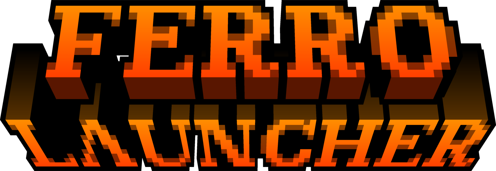

03 · La app
Hecha para manosearse
Capturas reales del launcher. Pulsa para ampliar.

Launcher gratis y open-source de Minecraft: Java Edition para Windows.
v0.6.0 · Windows 10/11 64-bit
Vanilla, Fabric, Quilt, Forge y NeoForge con instaladores oficiales, snapshots y Java automático.
Mods, shaders, resource packs y modpacks desde Modrinth y CurseForge.
Offline, multicuenta Microsoft, skins, capas y anti-suplantación.
Backups por instancia, exportar/importar y copia total del perfil.
Servidores con ping, doctor de crashes, JVM a medida, temas, ES/EN, sonidos y Discord RPC.
Intro cinematográfica, sidebar auto-colapsable, resortes, scroll con squash y sonidos sintetizados.
…
Capturas reales del launcher. Pulsa para ampliar.
Núcleo completo: loaders, mods, cuentas premium, backups, updater.
v0.6 con login premium, servidores, doctor de crashes y web. Probando con la comunidad.
Firma del instalador, modo offline total y más loaders.
Reporta bugs, pide funciones o echa un cable. Todo pasa por GitHub y Discord.
Gratis y open-source (MIT). Elige instalador o portable, ambos de la última release de GitHub.
Asistente con accesos directos y auto-updater integrado.
Descargar instaladorSin instalación: descomprime y juega donde quieras.
Versión portableWindows 10/11 64-bit · ~200 MB · Java incluido automáticamente
Sí, porque el instalador no está firmado (cuesta dinero). Es seguro: el código es público. Pulsa Más información → Ejecutar de todas formas.
No para jugar offline. Con cuenta (que tenga Minecraft Java) entras a servidores online con tu nombre real.
No. El launcher detecta el Java que pide cada versión y descarga Temurin solo si falta.
No. Proyecto personal no comercial, sin afiliación. Los archivos del juego se descargan siempre de servidores oficiales.
{kind=link}
{kind=link}
{kind=link}